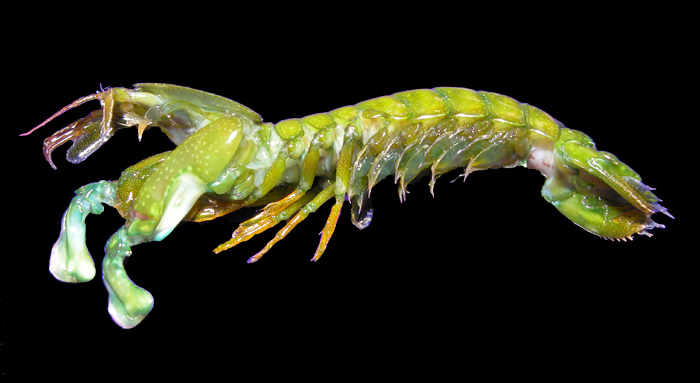

Fatos gerais os Stomatopoda
O camarão mantis não é um camarão e, exceto pelo fato de ser um artrópode, também não está relacionado ao louva-deus. Em vez disso, os camarões mantis são 500 espécies diferentes pertencentes à ordem Stomatopoda. Para distingui-los do camarão verdadeiro, os camarões mantis são chamados às vezes de estomatoópodes.Camarões Mantis são conhecidos por suas garras poderosas, que eles usam para espancar ou esfaquear suas presas. Além de seu método de caça feroz, os camarões mantis também são conhecidos por seu extraordinário senso de visão.
Classificação
- Reino: Animalia
- Filo: Arthropoda
- Subfilo: Crustacea
- Classe: Malacostraca
- Ordem: Stomatopoda
Fatos curiosos:
O Camarão-mantis se divide em dois tipos: os que possuem frontais com garras e os que possuem apêndices frontais em formato de massa(luvas de boxe).

As espécies que possuem garras(dactils) empenham uma tática de emboscada para capturar suas presas, ficando enterrados na areia e, quando uma presa nada acima dele, são impalados pelas garras.

As espécies que possuem apêndices em formato de massa perseguem suas presas, batendo nelas com socos fortíssimos com força equivalente à um tiro de calibre .22
